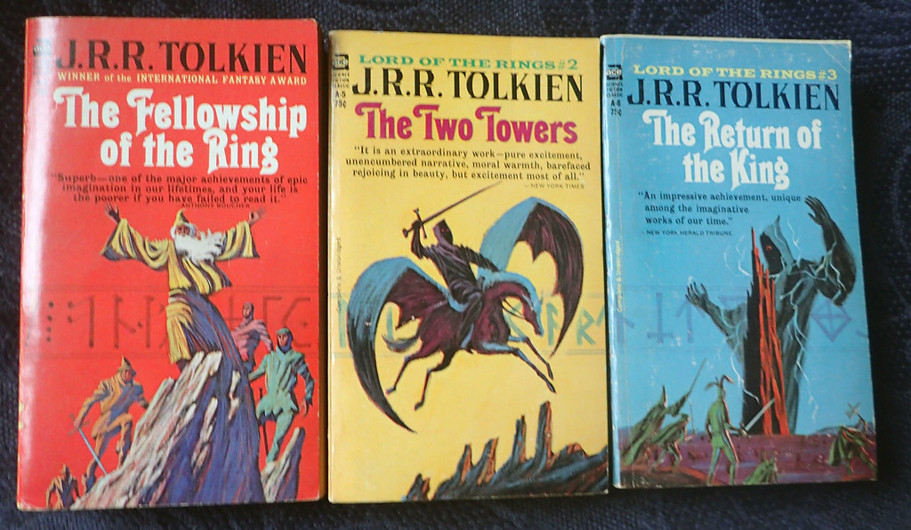
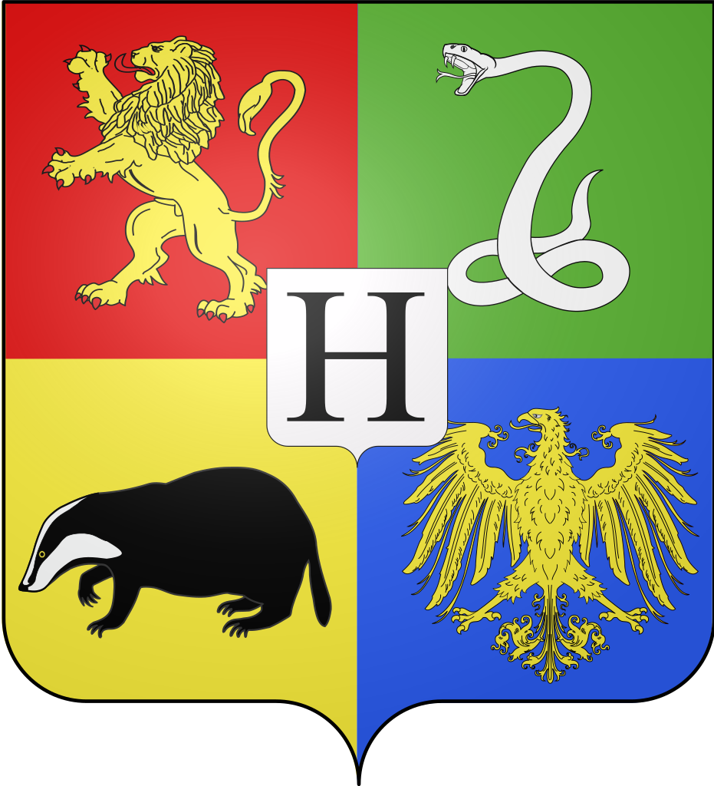
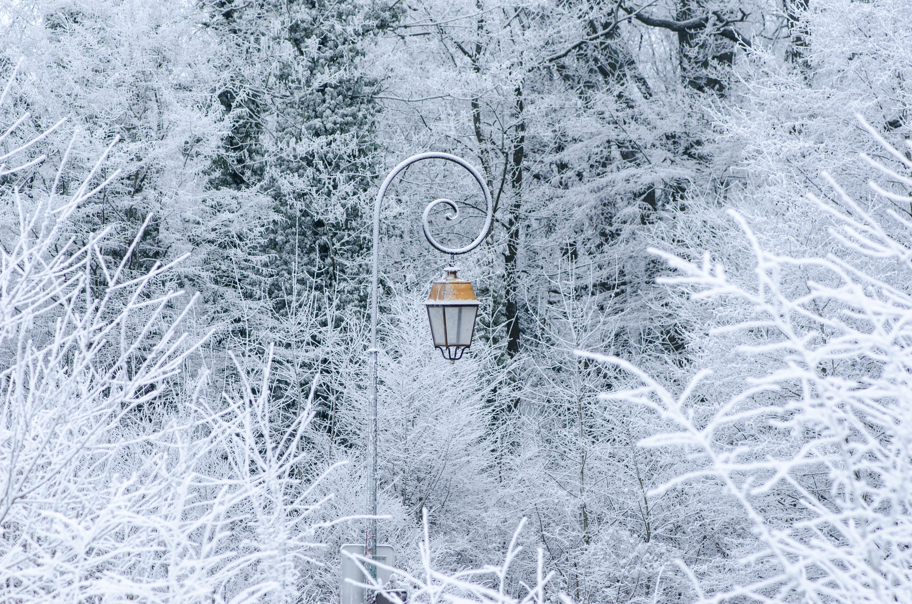

Lord of the Rings
by J.R.R. Tolkien
One of the most beloved Fantasy novels in the world. The story of Frodo Baggins and his journey for the One Ring is epic. This series has been made into movies, been the subject of college classes and the inspiration for entire conventions. This was one of the first fantasy books I read as a child and it has always remained one of my favorites to this day
Harry Potter Series
by J.K. Rowling
The story of Harry Potter and his adventures at Hogwarts is near and dear to my heart. From the very first sentence of Harry Potter and the Sorcerers Stone to the final paragraph of Harry Potter and the Deathly Hallows the reader is drawn in and captured by the charm of a school for wizards along with the excitement of the story's darker elements. This series is loved all around the world for good reason
The Chronicles of Narnia
by C.S. Lewis
The chronicles of Narnia are mostly classified as a series for children but there are a lot of people who have spent a lot of time analyzing and studying this story of the magical land of Narnia. Some say its just a fairy tale. Others say there is a deeper religious meaning. Either way these books are very well written and engaging. Young and old alike will enjoy them.
There are so many more...
The above books are my top three favorite book series. If you havent read any or all of them I reccommend you give them a try. I would love to hear what your favorite book is. Email me below and let me know!